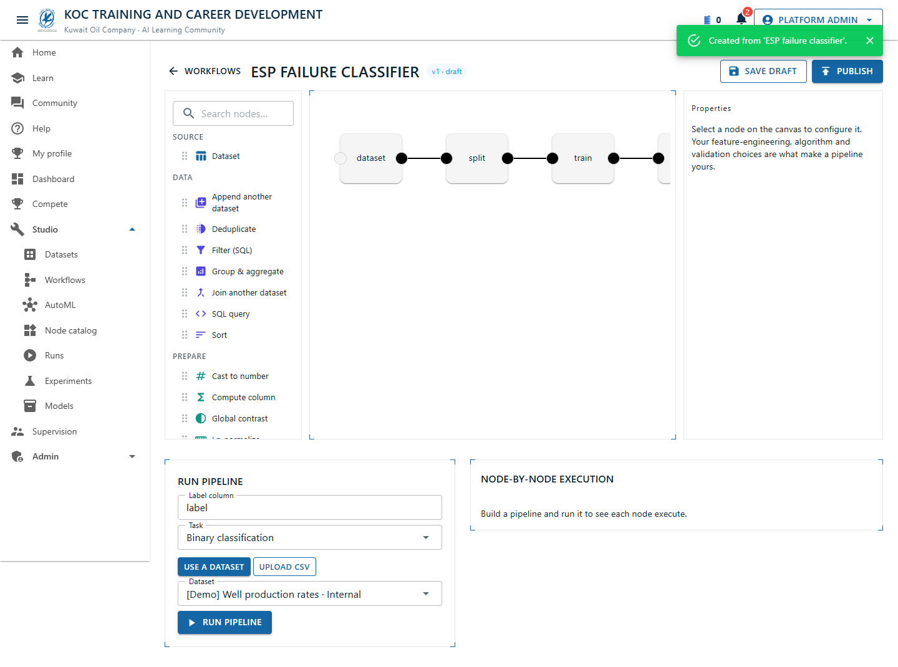

Visual help
A guided tour of the platform, illustrated with live screenshots. Each section shows a screen and what you can do there. Prefer text? See the Developer and Administrator guides.
Home & role switch /
The landing page. The app bar carries a live notification bell and a "view as" role switcher (Employee → CEO), so you can see how the app behaves for each person.
- Switch role to preview visibility, dashboards, and leaderboards per person.
- Jump into Learn, Compete, or the Studio.

Dashboard /dashboard
Your personal standings — learning progress and competition results — plus a team overview if you lead people.

Learn — guided tracks /learn
Structured learning tracks with real lessons. Enroll, work through lessons, and complete a track to earn standing.

Community /community
Discussions and replies — ask questions, share solutions, and react. Org-scoped so you see your community.

Competitions /compete
Internal, Kaggle-style challenges on real KOC problems. Download the data, build a model in the Studio, and submit your pipeline to climb the live leaderboard; final standings stay hidden until reveal day.
- Only granted users (and admins) can host a competition — at their permitted level.
- Everyone in scope can enter and submit.

Datasets /datasets
Create and version datasets with a "who can see this" picker (Team/Group/Directorate/Company) and audience counts.

Workflows registry /workflows
Version your ML pipelines: save drafts, publish an immutable snapshot once it compiles, then export or run. Start from an O&G template, or open a workflow in the designer.

Studio — the workflow designer /workflow
The visual node editor. Drag nodes from the palette onto the canvas, wire them, and configure each in the property inspector, then run the pipeline node-by-node. ML.NET and DuckDB (SQL/ETL) nodes mix freely — including join / append of a second dataset.
- Palette + inspector are driven by the live node catalog.
- Run on a dataset to see each node execute and a trained metric.
- Submit the pipeline to a competition from its Submit card.

AutoML studio /studio
Point-and-shoot AutoML: pick a CSV and a task (binary / multiclass / regression) and let ML.NET find a model. Runs feed the registry.

Node catalog /nodes
The full library of pipeline nodes — data sources, DuckDB SQL/ETL, feature engineering, splitting, models, and evaluation — with their parameters.

Runs /runs
Durable background jobs (training runs and workflow executions) with their status, logs, and attempts.

Experiment tracking /experiments
Group runs into experiments and compare their metrics and parameters side by side.

Model registry /models
Register a trained model, take it through a two-approval promotion, deploy or retire it, and serve inference.

My profile /profile
Your public face on the platform — avatar, bio, skills — plus earned standing (Barrels, level, streak, badges).

In-app help /help
Searchable help articles and FAQs, in the app.

Admin console /admin — Platform Admin only
Live health KPIs, the RBAC / Users tab (who can create competitions + at what level, org codes, departments), typed settings (secrets encrypted), feature flags, demo data, and the audit trail. See the Administrator Guide for details.